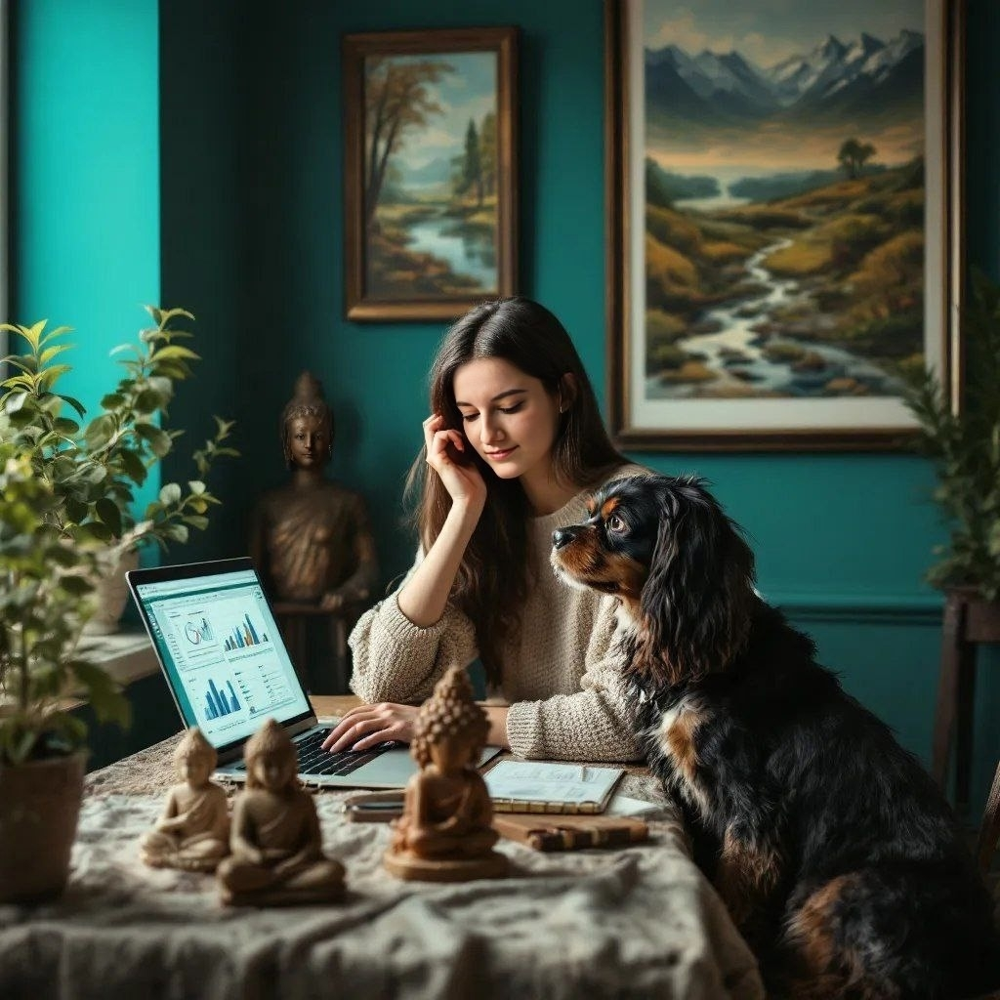
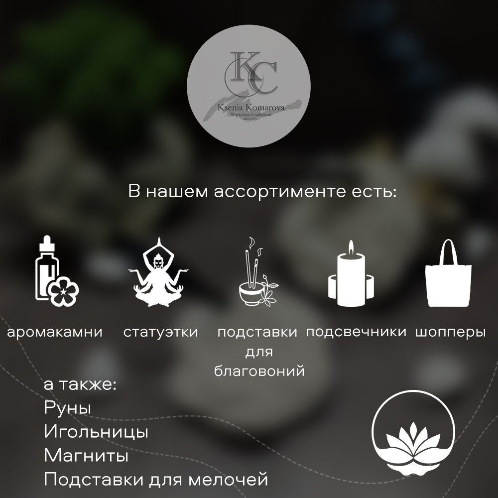

01
Живопись
Холст, бумага, ткань. Цвет, линия, композиция и образы, которые возвращаются в разных формах.
Из образов, вдохновения и смысла — в осязаемую форму.
Живопись, глина, предметы, символы и эксперименты. А ещё — технологии, аналитика и AI. Мне интересно находить связи между тем, что на первый взгляд находится в совершенно разных мирах.

Напишите мне в личные сообщения VK. Расскажите, что хочется создать, для кого это и какой образ вы представляете — дальше вместе разберёмся с формой, материалами и деталями.
Меня зовут Ксения Комарова. Я художник, эзотерик и основатель Мастерской-Колыбель.
Я пришла к мастерской через живопись: пробовала разные техники, экспериментировала с цветом, а потом меня всё сильнее стало тянуть к формам и предметам.
Так появились глиняные статуэтки, обложки для блокнотов, шкатулки, декор и украшения. Но рисунок всё равно оставался рядом.
В какой-то момент творчество перестало быть для меня просто творчеством. Мне захотелось создавать не только вещи, но и пространство смыслов вокруг них.
Мастерская — место работы и экспериментов. Здесь вдохновение перетекает в осязаемую форму.
Колыбель — первое личное пространство человека, маленький мир в большой вселенной. Образ тишины, спокойствия и защищённости.
Поэтому готовое изделие для меня — не просто предмет. Попадая к своему хозяину, оно начинает раскрываться и создавать ощущение собственного защищённого пространства.
Холст, бумага, ткань. Цвет, линия, композиция и образы, которые возвращаются в разных формах.
Объём, фактура и работа руками. От мягкой массы к предмету, который можно держать и рассматривать со всех сторон.
Свечи, сумки, магнитики, шкатулки, акварельные краски, мелочи для шитья и другие вещи, в которых может поселиться образ.
Смыслы, ассоциации, эзотерика и личные истории, стоящие за визуальным образом.
Руны, МАК, таро, архетипы, знаки и другие символические системы — как язык образов и личных смыслов.
Свечи, сумки, магнитики, шкатулки, акварельные краски, мелочи для шитья и другие небольшие вещи. Для меня это не отдельный «магазинный ассортимент», а ещё одна поверхность, на которой может появиться образ.
Некоторые предметы могут быть самостоятельными, другие — частью будущих маленьких миров.

Мне не хочется выбирать один материал и навсегда оставаться в нём. Иногда образу нужна краска, иногда — ткань, объём, дерево или глина.
Поэтому мастерская для меня — место эксперимента: я ищу не материал ради материала, а форму, в которой образ сможет раскрыться.
В мастерской я работаю через осознанность и медитации. Перед созданием работы я стараюсь очистить внимание, настроиться на образ и только потом переходить к материалу и форме.
Это направление сейчас рождается внутри мастерской. Мне интересно выводить рисунок за пределы обычного холста: работать с тканью, деревом, гипсом, глиной, объёмом и разными рамами.
Мне нравится, когда работа перестаёт быть просто изображением на поверхности и становится предметом, который можно держать, рассматривать со всех сторон, поставить рядом с собой.
Здесь материал становится частью образа. Рама — частью композиции. А маленький размер — не ограничением, а способом создать отдельный, почти камерный мир.
Предметные картины. Маленькие миры в рамке — направление, в котором я сейчас соединяю рисунок, ткань, дерево, гипс, глину, объём и найденные рамы.
Посмотреть концепцию →Ссылка на запись пока не добавлена.
Ссылка на запись пока не добавлена.
Ссылка на запись пока не добавлена.
Ссылка на запись пока не добавлена.
В моей работе рядом существуют экономика и искусство, цифры и образы, автоматизация и ручная работа. Для меня это не случайный набор занятий, а несколько способов смотреть на одну и ту же вещь — замечать, как она устроена, и придумывать, как сделать её иначе.
Бухгалтерия, закупки, продажи, работа с товарами и бизнес-процессами. Этот этап научил меня видеть систему целиком: от цифры и документа до того, что в итоге получает человек.
Живопись, ручная работа, глина, предметы, символы, выставки. Здесь я работаю не только с формой, но и с тем, какое ощущение и какой образ остаются у человека.
Управление маркетплейсами, коммерческие задачи, SMM, дашборды, автоматизация и AI. Здесь мне интересно превращать хаос ручной работы в понятную систему — и при этом оставлять место для эксперимента.
Дизайн, искусство, педагогика, арт-практики, Python, нейросети, аналитика, управление и другие направления. Мне важно не просто собирать курсы, а расширять инструментарий и переносить знания из одной области в другую.
Экономика даёт мне структуру. Аналитика — привычку замечать закономерности. AI и автоматизация — возможность быстро проверять идеи. Искусство — внимание к образу, фактуре, ощущению и тому, что не всегда можно измерить.
Когда эти области встречаются, я могу смотреть на задачу сразу с нескольких сторон. Именно поэтому в моём портфолио рядом существуют дашборды и картины, Python и глина, автоматизация и ручная работа.
Мне важно учиться не ради списка дипломов. Новое знание должно становиться рабочим инструментом — в проекте, в мастерской или в том, как я смотрю на задачу.
Здесь появляются записи Мастерской-Колыбель: процесс, готовые работы, мысли, новые эксперименты и новости.
Открыть мастерскую →Моя рабочая социальная сеть от hh.ru. Здесь мне важны профессиональные заметки, AI, автоматизация, аналитика, рабочие наблюдения и люди, с которыми пересекаются эти темы.
Открыть профиль →